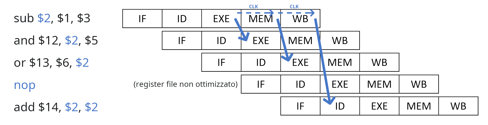
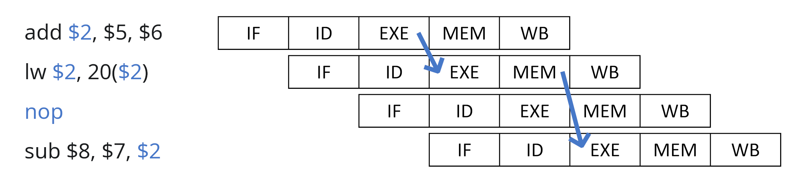

Forwarding
Una soluzione alla lentezza causata dall'identificazione degli hazards è il forwarding, che permette di intercettare le informazioni che ci servono dalle unità intermedie senza aspettare il WB (Write Back).
Nel caso delle operazioni aritmetiche è quindi possibile intercettare il risultato dall'ALU nell'unità EXE:

Nel caso della load invece, bisogna aspettare che la memoria finisca la lettura nell'unità MEM:

Branching
Un altro problema è che le istruzioni a seguito di una beq fanno in tempo a entrare nella pipeline:
beq $1, $2, 10
add $5, $3, $4 ; Esegue IF, ID, EXE
sub $6, $2, $5 ; Esegue IF, ID
and $3, $6, $1 ; Esegue IF
sw $3, 20($7) ; Non viene eseguita perchè il PC viene aggiornato
Per risolvere questo problema esistono i seguenti approcci:
- Si inseriscono tre
nopal posto delle istruzioni successive - Si bloccano se il branch è taken, dato che sono al più arrivate a EXE e devono ancora fare alterazioni
- Si prevede il branch, salvando su una tabella l'indirizzo dell'istruzione, l'indirizzo di salto e due bit di stato con cui viene scelto se predire il salto oppure no
- Delayed branch, per cui si sposta la logica su ID (il register file occupa meno del periodo di clock), calcolando
Zerocon unoXORe eseguendoPC += sign_ext(Imm16) << 2già dentro ID
L'ultima opzione è quella adottata dal MIPS, dato che solo l'istruzione successiva viene eseguita oltre al beq:
add $2, $1, $3
nop ; Permette alla beq di ricevere $2 dall'EXE di add su ID
beq $1, $2, 15 ; Ha già l'esito del branch su ID
and $3, $4, $5 ; Viene eseguita perchè fa a tempo ad entrare il suo IF
lw $1, 10($6) ; Non viene eseguita se beq è taken
nop
nop ; Permettono alla beq di ricevere $1 dal MEM di lw su ID
beq $1, $2, 5
sw $1, 10($7) ; Non viene eseguita se beq è taken
Di conseguenza, le dipendenze si possono riassumere in:
| Operazione | Dipendenze entranti | Dipendenze uscenti |
|---|---|---|
| ALU | EXE (operandi) | EXE (risultato) |
lw | EXE (somma dei registri per l'indirizzo) | MEM (valore letto) |
sw | EXE (id. lw) o MEM (valore da scrivere) | - |
beq | ID (registri per il confronto) | - |
Esempio
Per esempio, il seguente codice:
loop:
lw $t0, 0($s0)
nop ; Sposta l'EXE di addi dopo il MEM di lw
addi $t0, $t0, 20 ; Dal MEM di lw all'EXE di addi
sw $t0, 0($s1) ; Dal MEM di addi (portato avanti dall'EXE) al MEM di sw
addi $s0, $s0, 4
addi $s1, $s1, 4 ; Sposta l'ID di bne dopo l'EXE di addi per $s0
bne $s0, $a0, loop ; Dall'EXE di addi all'ID di bne
nop ; Delay slot del branch
viene eseguito in 12 cicli di clock, mentre se si ottimizza:
loop:
lw $t0, 0($s0)
addi $s0, $s0, 4
addi $t0, $t0, 20
sw $t0, 0($s1)
bne $s0, $a0, loop
addi $s1, $s1, 4
si arrivano ad usare solamente 10 cicli di clock.